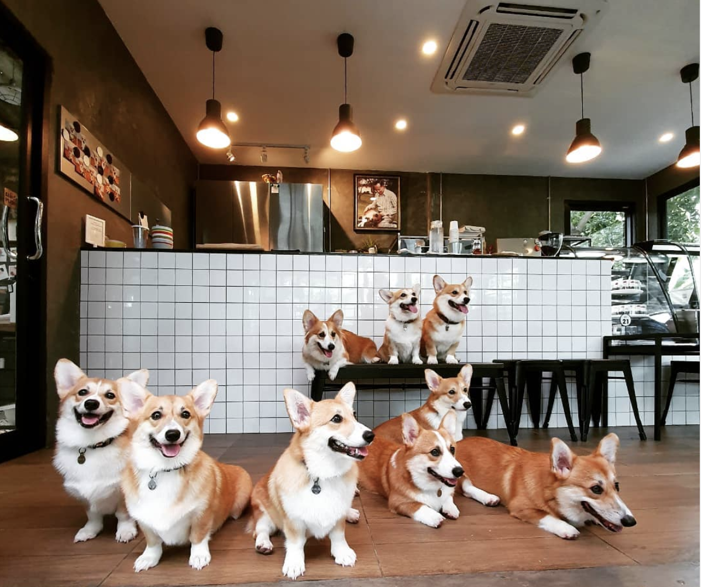

A Dog's Brew
Created: Febuary 14, 2022
Type: Major-Type
Description: Imagine, if you will, a restaurant that serves dogs, along with you! A kind of
place where you can bring your dog to have a meal along side you. That's what this website
represents! Based on a kind of restaurant that Ms Leonard had found on her travels, A Dog's Brew
is made to recreate what the website of this particular restaurant would look like. It contains
refernces to movies, links to KGT Studios, and a logo Kalen made in Photoshop. It was one of the
first Major-Type websites Kalen ever made!
Fun Fact: The name of the made-up restaurant, A Dog's Brew, was based on the many movies with
similar names. These include A Dog's Purpose, A Dog's Journey, and A Dog's Way Home!
